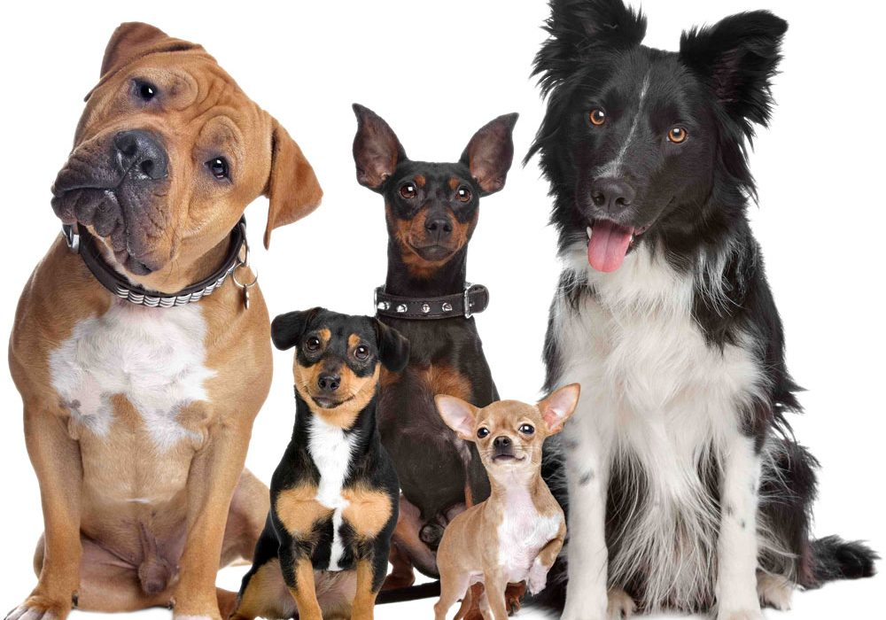
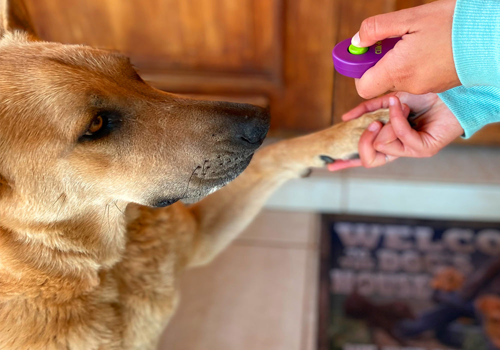

Se dice que el pug se remonta a unos 2000 años cuando los emperadores de China desarrollaron estas mascotas refinadas. Al igual que muchas razas del Extremo Oriente, los pugs eran un tesoro que los extranjeros solo adquirían raramente como regalo. La raza se extendió en los años 1500 cuando los comerciantes holandeses llevaron los primeros ejemplares a Europa

El American Bobtail es un gato abundante y de cola corta. Su cuerpo es moderadamente largo, con huesos sustanciales y fornido. La postura es notablemente rectangular. El torso es lleno y ancho. Las caderas son sólidas, casi tan anchas como el pecho, y las patas traseras son más largas que las patas delanteras con pies grandes y redondos que pueden tener mechones en los dedos. La cabeza es una cuña ancha sin planos planos, de tamaño proporcional al cuerpo. Hay una curva cóncava desde la nariz hasta las cejas, o una elevación hacia las cejas prominentes, un hocico ancho y sin pellizcos, almohadillas de bigotes prominentes, una nariz ancha suavemente inclinada y mandíbulas fuertes y llenas.